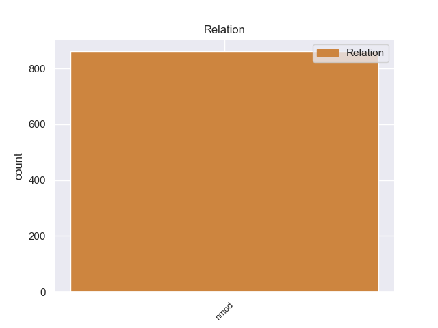
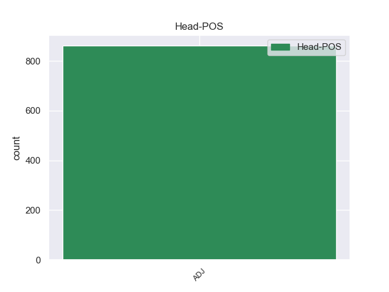
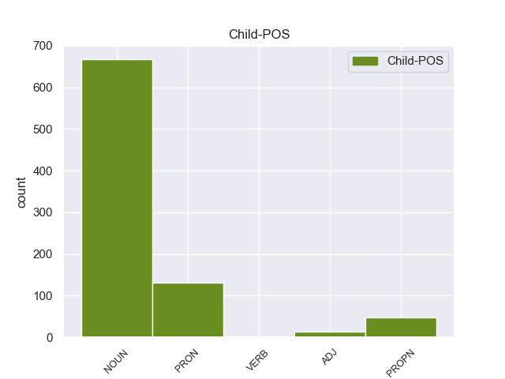

Distribution of features within this leaf



Morphosyntax Rules sorted by frequency.
- When the dependent token is the nominal modifier(nmod) of the head token, and the head token is ADJ the Case needs to be Gen.
1 Я _ _ _ _ 0 _ _ _
2 вытряхнул _ _ _ _ 0 _ _ _
3 грибы _ _ _ _ 0 _ _ _
4 из _ _ _ _ 0 _ _ _
5 рубашки _ _ _ _ 0 _ _ _
6 и _ _ _ _ 0 _ _ _
7 надел _ _ _ _ 0 _ _ _
8 ее _ _ _ _ 0 _ _ _
9 на _ _ _ _ 0 _ _ _
10 себя _ _ _ _ 0 _ _ _
11 , _ _ _ _ 0 _ _ _
12 безнадежно _ _ _ _ 0 _ _ _
13 замаранную _ _ _ _ 0 _ _ _
14 , _ _ _ _ 0 _ _ _
15 приятно _ _ _ _ 0 _ _ _
16 и _ _ _ _ 0 _ _ _
17 остро _ _ _ _ 0 _ _ _
18 пахучую пахучий ADJ _ Case=Acc|Degree=Pos|Gender=Fem|Number=Sing 0 _ _ _
19 от _ _ _ _ 0 _ _ _
20 свинушек свинушка NOUN _ Animacy=Inan|Case=Gen|Gender=Fem|Number=Plur 18 nmod 18:nmod SpaceAfter=No
21 , _ _ _ _ 0 _ _ _
22 и _ _ _ _ 0 _ _ _
23 двинулся _ _ _ _ 0 _ _ _
24 дальше _ _ _ _ 0 _ _ _
25 . _ _ _ _ 0 _ _ _
non-conforming Examples:
1 Выстрел _ _ _ _ 0 _ _ _
2 не _ _ _ _ 0 _ _ _
3 слышен слышный ADJ _ Degree=Pos|Gender=Masc|Number=Sing|Variant=Short 0 _ _ _
4 на _ _ _ _ 0 _ _ _
5 расстоянии расстояние NOUN _ Animacy=Inan|Case=Loc|Gender=Neut|Number=Sing 3 nmod 3:nmod _
6 5 _ _ _ _ 0 _ _ _
7 - _ _ _ _ 0 _ _ _
8 8 _ _ _ _ 0 _ _ _
9 метров _ _ _ _ 0 _ _ _
10 . _ _ _ _ 0 _ _ _
1 За _ _ _ _ 0 _ _ _
2 это _ _ _ _ 0 _ _ _
3 короткое _ _ _ _ 0 _ _ _
4 мгновение _ _ _ _ 0 _ _ _
5 , _ _ _ _ 0 _ _ _
6 что _ _ _ _ 0 _ _ _
7 он _ _ _ _ 0 _ _ _
8 колебался _ _ _ _ 0 _ _ _
9 , _ _ _ _ 0 _ _ _
10 высокий _ _ _ _ 0 _ _ _
11 немец _ _ _ _ 0 _ _ _
12 сдвинулся _ _ _ _ 0 _ _ _
13 вправо _ _ _ _ 0 _ _ _
14 , _ _ _ _ 0 _ _ _
15 а _ _ _ _ 0 _ _ _
16 на _ _ _ _ 0 _ _ _
17 мушку _ _ _ _ 0 _ _ _
18 взошел _ _ _ _ 0 _ _ _
19 другой _ _ _ _ 0 _ _ _
20 , _ _ _ _ 0 _ _ _
21 поменьше малый ADJ _ Degree=Cmp 0 _ _ _
22 ростом рост NOUN _ Animacy=Inan|Case=Ins|Gender=Masc|Number=Sing 21 nmod 21:nmod SpaceAfter=No
23 , _ _ _ _ 0 _ _ _
24 в _ _ _ _ 0 _ _ _
25 глубокой _ _ _ _ 0 _ _ _
26 каске _ _ _ _ 0 _ _ _
27 , _ _ _ _ 0 _ _ _
28 сидевшей _ _ _ _ 0 _ _ _
29 у _ _ _ _ 0 _ _ _
30 него _ _ _ _ 0 _ _ _
31 почти _ _ _ _ 0 _ _ _
32 на _ _ _ _ 0 _ _ _
33 плечах _ _ _ _ 0 _ _ _
34 . _ _ _ _ 0 _ _ _
1 В _ _ _ _ 0 _ _ _
2 левой _ _ _ _ 0 _ _ _
3 руке _ _ _ _ 0 _ _ _
4 - _ _ _ _ 0 _ _ _
5 маленький маленький ADJ _ Case=Nom|Degree=Pos|Gender=Masc|Number=Sing 0 _ _ _
6 при _ _ _ _ 0 _ _ _
7 его _ _ _ _ 0 _ _ _
8 огромном _ _ _ _ 0 _ _ _
9 росте рост NOUN _ Animacy=Inan|Case=Loc|Gender=Masc|Number=Sing 5 nmod 5:nmod _
10 ручной _ _ _ _ 0 _ _ _
11 пулемет _ _ _ _ 0 _ _ _
12 . _ _ _ _ 0 _ _ _
1 От _ _ _ _ 0 _ _ _
2 его _ _ _ _ 0 _ _ _
3 потного _ _ _ _ 0 _ _ _
4 , _ _ _ _ 0 _ _ _
5 голого голый ADJ _ Case=Gen|Degree=Pos|Gender=Neut|Number=Sing 0 _ _ _
6 по _ _ _ _ 0 _ _ _
7 пояс пояс NOUN _ Animacy=Inan|Case=Acc|Gender=Masc|Number=Sing 5 nmod 5:nmod _
8 тела _ _ _ _ 0 _ _ _
9 на _ _ _ _ 0 _ _ _
10 морозе _ _ _ _ 0 _ _ _
11 шел _ _ _ _ 0 _ _ _
12 пар _ _ _ _ 0 _ _ _
13 . _ _ _ _ 0 _ _ _
1 Заметенные _ _ _ _ 0 _ _ _
2 снегом _ _ _ _ 0 _ _ _
3 , _ _ _ _ 0 _ _ _
4 они _ _ _ _ 0 _ _ _
5 двинулись _ _ _ _ 0 _ _ _
6 , _ _ _ _ 0 _ _ _
7 смутно _ _ _ _ 0 _ _ _
8 различимые различимый ADJ _ Case=Nom|Degree=Pos|Number=Plur 0 _ _ _
9 сквозь _ _ _ _ 0 _ _ _
10 поземку поземка NOUN _ Animacy=Inan|Case=Acc|Gender=Fem|Number=Sing 8 nmod 8:nmod SpaceAfter=No
11 . _ _ _ _ 0 _ _ _